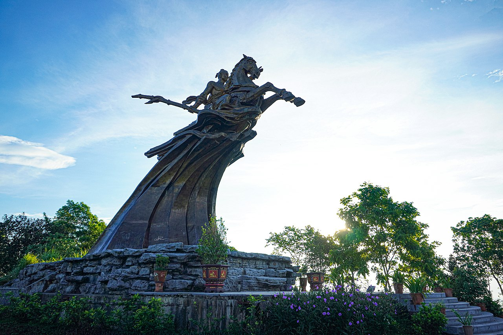

Núi Sóc
 |
Núi Sóc (còn gọi là núi Đá Chồng, núi Độc Tôn) là điểm đầu mút phía Đông Nam của dãy Tam Đảo.
Đỉnh Vệ Linh cao 306m là điểm cao nhất của ngọn núi. Dưới chân núi có quần thể Đền Sóc thờ Thánh Gióng.
Hiện nay, trên đỉnh Vệ Linh còn có Tượng đài Thánh Gióng do Thành phố Hà Nội và Giáo hội Phật giáo Việt Nam
xây dựng từ năm 2008 và khánh thành năm 2010 chào mừng Đại lễ 1000 năm Thăng Long – Hà Nội.
Tự nhiên
Sóc Sơn, với cảnh quan đẹp, không khí trong lành và vị trí gần so với trung tâm Hà Nội, từ lâu đã trở thành
điểm dã ngoại phổ biến với các bạn trẻ và các gia đình nội thành Hà Nội.
Cảnh quan thiên nhiên vùng núi Sóc chủ yếu là rừng cây tự nhiên xen lẫn rừng trồng bao phủ đồi núi với
những suối cạn; rừng thông rậm rạp được phủ kín bởi guột dưới mặt đất; và những khoảng đồi trống thường
được sử dụng làm nơi cắm trại cho các nhóm đi dã ngoại. Dưới chân núi là nhiều hồ nước đẹp, trong đó có
hồ Đồng Quan là hồ nhân tạo lớn nhất của huyện Sóc Sơn.
Trước đây, đỉnh Vệ Linh chỉ có đường mòn xuyên rừng đi lên, hiện nay, ngoài con đường lớn cho xe cơ giới
dẫn lên tượng đài Thánh Gióng phục vụ du lịch, có 2 con đường khác được xây bậc thang bằng gạch,
cho phép du khách trải nghiệm leo bộ lên đỉnh núi từ đền Sóc hoặc chùa Non Nước.
Du lịch
Đền Sóc
Đền Sóc nằm dưới chân núi Sóc, thuộc địa phận xã Phù Linh, thờ Phù Đổng Thiên Vương Thánh Gióng.
Đền được Nhà nước xếp hạng là di tích lịch sử văn hóa quốc gia vào năm 1962 và xếp hạng là di
tích quốc gia đặc biệt năm 2014. Năm 2010, UNESCO đã vinh danh Hội Gióng là Di sản văn hoá phi
vật thể đại diện của nhân loại.

Chùa Non Nước
Chùa Non (tên chữ là Sóc Thiên Vương Thiền tự) nằm trong Quần thể di tích Đền Sóc, ở độ cao hơn
110m trên sườn núi Sóc.
Theo Thuyền Uyển Tập Anh và Đại Việt sử ký toàn thư, vị thiền sư đầu tiên trụ trì chùa này tên là
Ngô Chân Lưu (933-1011), hậu duệ của Ngô Quyền. Năm 971, được vua Đinh Tiên Hoàng phong hiệu Khuông
Việt Quốc sư. Đó là vị thiền sư đầu tiên được Nhà nước phong kiến phong tặng danh hiệu Quốc sư.
Lịch sử ghi nhận, vị Quốc sư này cùng Vạn Hạnh Thiền sư đã phù trợ đưa Lý Công Uẩn lên ngôi chấn hưng đất
nước. Năm 1010 Lý Công Uẩn rời đô từ Hoa Lư - Ninh Bình ra Thăng Long mở đầu cho thời kỳ hưng thịnh nhất
của lịch sử Nhà nước phong kiến Việt Nam. Khuông Việt Quốc sư trở thành Việt Nam tam triều Quốc sư
(trải ba triều Đinh - Lê - Lý).
Chùa Non Nước đã được xây dựng lại, trở thành một trong những ngôi chùa lớn của Hà Nội.
Pho tượng Phật tổ Như Lai bằng đồng đúc liền khối nặng 30 tấn, cao 6,50 m, nếu kể cả bệ đá,
chiều cao hơn 8 m được khởi công ngày 8-4 Tân Tỵ (2001) được rước từ cơ sở đúc đồng huyện Ý Yên,
tỉnh Nam Định về Sóc Sơn, an tọa tại chùa Non Nước.
Tượng đài Thánh Gióng
Tượng đài Thánh Gióng nằm trên đỉnh Vệ Linh, được xây dựng năm 2008 và khánh thành năm 2010 chào mừng
Đại lễ 1000 năm Thăng Long – Hà Nội. Tượng được xây dựng để tưởng nhớ công đức của Phù Đổng Thiên Vương.
Tượng đúc bằng đồng nguyên chất, cao 11 m và nặng 85 tấn, hướng về phía Nam. Khu tượng đài Thánh Gióng
nằm trên đỉnh núi Sóc ở độ cao khoảng 300 m, gồm sân hành lễ rộng 1500 m², nhà phương đình và một số
công trình phụ trợ như nhà quản lý, bãi đậu xe, chòi nghỉ chân,... Có 3 lối đi dẫn lên khu tượng đài,
gồm 1 đường lớn trải nhựa dành cho xe cơ giới và 2 lối nhỏ được làm bậc thang lát đá, cho phép du khách
leo bộ từ đền Sóc hoặc chùa Non Nước.